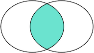

关系数据库概述
为什么需要数据库？
因为应用程序需要保存用户的数据，比如Word需要把用户文档保存起来，以便下次继续编辑或者拷贝到另一台电脑。
要保存用户的数据，一个最简单的方法是把用户数据写入文件。例如，要保存一个班级所有学生的信息，可以向文件中写入一个CSV文件：
|
|
如果要保存学校所有班级的信息，可以写入另一个CSV文件。
但是，随着应用程序的功能越来越复杂，数据量越来越大，如何管理这些数据就成了大问题：
- 读写文件并解析出数据需要大量重复代码；
- 从成千上万的数据中快速查询出指定数据需要复杂的逻辑。
如果每个应用程序都各自写自己的读写数据的代码，一方面效率低，容易出错，另一方面，每个应用程序访问数据的接口都不相同，数据难以复用。
所以，数据库作为一种专门管理数据的软件就出现了。应用程序不需要自己管理数据，而是通过数据库软件提供的接口来读写数据。至于数据本身如何存储到文件，那是数据库软件的事情，应用程序自己并不关心：
|
|
这样一来，编写应用程序的时候，数据读写的功能就被大大地简化了。
数据模型
数据库按照数据结构来组织、存储和管理数据，实际上，数据库一共有三种模型：
- 层次模型
- 网状模型
- 关系模型
层次模型就是以“上下级”的层次关系来组织数据的一种方式，层次模型的数据结构看起来就像一颗树：
|
|
网状模型把每个数据节点和其他很多节点都连接起来，它的数据结构看起来就像很多城市之间的路网：
|
|
关系模型把数据看作是一个二维表格，任何数据都可以通过行号+列号来唯一确定，它的数据模型看起来就是一个Excel表：
|
|
随着时间的推移和市场竞争，最终，基于关系模型的关系数据库获得了绝对市场份额。
为什么关系数据库获得了最广泛的应用？
因为相比层次模型和网状模型，关系模型理解和使用起来最简单。
关系数据库的关系模型是基于数学理论建立的。我们把域（Domain）定义为一组具有相同数据类型的值的集合，给定一组域D1,D2,…,Dn，它们的笛卡尔集定义为D1×D2×……×Dn={(d1,d2,…,dn)|di∈Di,i=1,2,…,n}， 而D1×D2×……×Dn的子集叫作在域D1,D2,…,Dn上的关系，表示为R(D1,D2,…,Dn)，这里的R表示$#%&^@!&$#;!~％¥%:(……算了，根本讲不明白，大家也不用理解。
基于数学理论的关系模型虽然讲起来挺复杂，但是，基于日常生活的关系模型却十分容易理解。我们以学校班级为例，一个班级的学生就可以用一个表格存起来，并且定义如下：
| ID | 姓名 | 班级ID | 性别 | 年龄 |
|---|---|---|---|---|
| 1 | 小明 | 201 | M | 9 |
| 2 | 小红 | 202 | F | 8 |
| 3 | 小军 | 202 | M | 8 |
| 4 | 小白 | 201 | F | 9 |
其中，班级ID对应着另一个班级表：
| ID | 名称 | 班主任 |
|---|---|---|
| 201 | 二年级一班 | 王老师 |
| 202 | 二年级二班 | 李老师 |
通过给定一个班级名称，可以查到一条班级记录，根据班级ID，又可以查到多条学生记录，这样，二维表之间就通过ID映射建立了“一对多”关系。
数据类型
对于一个关系表，除了定义每一列的名称外，还需要定义每一列的数据类型。关系数据库支持的标准数据类型包括数值、字符串、时间等：
| 名称 | 类型 | 说明 |
|---|---|---|
| INT | 整型 | 4字节整数类型，范围约+/-21亿 |
| BIGINT | 长整型 | 8字节整数类型，范围约+/-922亿亿 |
| REAL | 浮点型 | 4字节浮点数，范围约+/-1038 |
| DOUBLE | 浮点型 | 8字节浮点数，范围约+/-10308 |
| DECIMAL(M,N) | 高精度小数 | 由用户指定精度的小数，例如，DECIMAL(20,10)表示一共20位，其中小数10位，通常用于财务计算 |
| CHAR(N) | 定长字符串 | 存储指定长度的字符串，例如，CHAR(100)总是存储100个字符的字符串 |
| VARCHAR(N) | 变长字符串 | 存储可变长度的字符串，例如，VARCHAR(100)可以存储0~100个字符的字符串 |
| BOOLEAN | 布尔类型 | 存储True或者False |
| DATE | 日期类型 | 存储日期，例如，2018-06-22 |
| TIME | 时间类型 | 存储时间，例如，12:20:59 |
| DATETIME | 日期和时间类型 | 存储日期+时间，例如，2018-06-22 12:20:59 |
上面的表中列举了最常用的数据类型。很多数据类型还有别名，例如，REAL又可以写成FLOAT(24)。还有一些不常用的数据类型，例如，TINYINT（范围在0~255）。各数据库厂商还会支持特定的数据类型，例如JSON。
选择数据类型的时候，要根据业务规则选择合适的类型。通常来说，BIGINT能满足整数存储的需求，VARCHAR(N)能满足字符串存储的需求，这两种类型是使用最广泛的。
主流关系数据库
目前，主流的关系数据库主要分为以下几类：
- 商用数据库，例如：Oracle，SQL Server，DB2等；
- 开源数据库，例如：MySQL，PostgreSQL等；
- 桌面数据库，以微软Access为代表，适合桌面应用程序使用；
- 嵌入式数据库，以Sqlite为代表，适合手机应用和桌面程序。
SQL
什么是SQL？SQL是结构化查询语言的缩写，用来访问和操作数据库系统。SQL语句既可以查询数据库中的数据，也可以添加、更新和删除数据库中的数据，还可以对数据库进行管理和维护操作。不同的数据库，都支持SQL，这样，我们通过学习SQL这一种语言，就可以操作各种不同的数据库。
虽然SQL已经被ANSI组织定义为标准，不幸地是，各个不同的数据库对标准的SQL支持不太一致。并且，大部分数据库都在标准的SQL上做了扩展。也就是说，如果只使用标准SQL，理论上所有数据库都可以支持，但如果使用某个特定数据库的扩展SQL，换一个数据库就不能执行了。例如，Oracle把自己扩展的SQL称为PL/SQL，Microsoft把自己扩展的SQL称为T-SQL。
现实情况是，如果我们只使用标准SQL的核心功能，那么所有数据库通常都可以执行。不常用的SQL功能，不同的数据库支持的程度都不一样。而各个数据库支持的各自扩展的功能，通常我们把它们称之为“方言”。
总的来说，SQL语言定义了这么几种操作数据库的能力：
DDL：Data Definition Language
DDL允许用户定义数据，也就是创建表、删除表、修改表结构这些操作。通常，DDL由数据库管理员执行。
DML：Data Manipulation Language
DML为用户提供添加、删除、更新数据的能力，这些是应用程序对数据库的日常操作。
DQL：Data Query Language
DQL允许用户查询数据，这也是通常最频繁的数据库日常操作。
语法特点
SQL语言关键字不区分大小写！！！但是，针对不同的数据库，对于表名和列名，有的数据库区分大小写，有的数据库不区分大小写。同一个数据库，有的在Linux上区分大小写，有的在Windows上不区分大小写。
所以，这里约定：SQL关键字总是大写，以示突出，表名和列名均使用小写。
关系模型
我们已经知道，关系数据库是建立在关系模型上的。而关系模型本质上就是若干个存储数据的二维表，可以把它们看作很多Excel表。
表的每一行称为记录（Record），记录是一个逻辑意义上的数据。
表的每一列称为字段（Column），同一个表的每一行记录都拥有相同的若干字段。
字段定义了数据类型（整型、浮点型、字符串、日期等），以及是否允许为NULL。注意NULL表示字段数据不存在。一个整型字段如果为NULL不表示它的值为0，同样的，一个字符串型字段为NULL也不表示它的值为空串''。
通常情况下，字段应该避免允许为NULL。不允许为NULL可以简化查询条件，加快查询速度，也利于应用程序读取数据后无需判断是否为NULL。
和Excel表有所不同的是，关系数据库的表和表之间需要建立“一对多”，“多对一”和“一对一”的关系，这样才能够按照应用程序的逻辑来组织和存储数据。
例如，一个班级表：
| ID | 名称 | 班主任 |
|---|---|---|
| 201 | 二年级一班 | 王老师 |
| 202 | 二年级二班 | 李老师 |
每一行对应着一个班级，而一个班级对应着多个学生，所以班级表和学生表的关系就是“一对多”：
| ID | 姓名 | 班级ID | 性别 | 年龄 |
|---|---|---|---|---|
| 1 | 小明 | 201 | M | 9 |
| 2 | 小红 | 202 | F | 8 |
| 3 | 小军 | 202 | M | 8 |
| 4 | 小白 | 201 | F | 9 |
反过来，如果我们先在学生表中定位了一行记录，例如ID=1的小明，要确定他的班级，只需要根据他的“班级ID”对应的值201找到班级表中ID=201的记录，即二年级一班。所以，学生表和班级表是“多对一”的关系。
如果我们把班级表分拆得细一点，例如，单独创建一个教师表：
| ID | 名称 | 年龄 |
|---|---|---|
| A1 | 王老师 | 26 |
| A2 | 张老师 | 39 |
| A3 | 李老师 | 32 |
| A4 | 赵老师 | 27 |
班级表只存储教师ID：
| ID | 名称 | 班主任ID |
|---|---|---|
| 201 | 二年级一班 | A1 |
| 202 | 二年级二班 | A3 |
这样，一个班级总是对应一个教师，班级表和教师表就是“一对一”关系。
在关系数据库中，关系是通过主键和外键来维护的。我们在后面会分别深入讲解。
主键
在关系数据库中，一张表中的每一行数据被称为一条记录。一条记录就是由多个字段组成的。例如，students表的两行记录：
| id | class_id | name | gender | score |
|---|---|---|---|---|
| 1 | 1 | 小明 | M | 90 |
| 2 | 1 | 小红 | F | 95 |
每一条记录都包含若干定义好的字段。同一个表的所有记录都有相同的字段定义。
对于关系表，有个很重要的约束，就是任意两条记录不能重复。不能重复不是指两条记录不完全相同，而是指能够通过某个字段唯一区分出不同的记录，这个字段被称为主键。
例如，假设我们把name字段作为主键，那么通过名字小明或小红就能唯一确定一条记录。但是，这么设定，就没法存储同名的同学了，因为插入相同主键的两条记录是不被允许的。
对主键的要求，最关键的一点是：记录一旦插入到表中，主键最好不要再修改，因为主键是用来唯一定位记录的，修改了主键，会造成一系列的影响。
由于主键的作用十分重要，如何选取主键会对业务开发产生重要影响。如果我们以学生的身份证号作为主键，似乎能唯一定位记录。然而，身份证号也是一种业务场景，如果身份证号升位了，或者需要变更，作为主键，不得不修改的时候，就会对业务产生严重影响。
所以，选取主键的一个基本原则是：不使用任何业务相关的字段作为主键。
因此，身份证号、手机号、邮箱地址这些看上去可以唯一的字段，均不可用作主键。
作为主键最好是完全业务无关的字段，我们一般把这个字段命名为id。常见的可作为id字段的类型有：
- 自增整数类型：数据库会在插入数据时自动为每一条记录分配一个自增整数，这样我们就完全不用担心主键重复，也不用自己预先生成主键；
- 全局唯一GUID类型：使用一种全局唯一的字符串作为主键，类似
8f55d96b-8acc-4636-8cb8-76bf8abc2f57。GUID算法通过网卡MAC地址、时间戳和随机数保证任意计算机在任意时间生成的字符串都是不同的，大部分编程语言都内置了GUID算法，可以自己预算出主键。
对于大部分应用来说，通常自增类型的主键就能满足需求。我们在students表中定义的主键也是BIGINT NOT NULL AUTO_INCREMENT类型。
如果使用INT自增类型，那么当一张表的记录数超过2147483647（约21亿）时，会达到上限而出错。使用BIGINT自增类型则可以最多约922亿亿条记录。
联合主键
关系数据库实际上还允许通过多个字段唯一标识记录，即两个或更多的字段都设置为主键，这种主键被称为联合主键。
对于联合主键，允许一列有重复，只要不是所有主键列都重复即可：
| id_num | id_type | other columns… |
|---|---|---|
| 1 | A | … |
| 2 | A | … |
| 2 | B | … |
如果我们把上述表的id_num和id_type这两列作为联合主键，那么上面的3条记录都是允许的，因为没有两列主键组合起来是相同的。
没有必要的情况下，我们尽量不使用联合主键，因为它给关系表带来了复杂度的上升。
小结
主键是关系表中记录的唯一标识。主键的选取非常重要：主键不要带有业务含义，而应该使用BIGINT自增或者GUID类型。主键也不应该允许NULL。
可以使用多个列作为联合主键，但联合主键并不常用。
外键
当我们用主键唯一标识记录时，我们就可以在students表中确定任意一个学生的记录：
| id | name | other columns… |
|---|---|---|
| 1 | 小明 | … |
| 2 | 小红 | … |
我们还可以在classes表中确定任意一个班级记录：
| id | name | other columns… |
|---|---|---|
| 1 | 一班 | … |
| 2 | 二班 | … |
但是我们如何确定students表的一条记录，例如，id=1的小明，属于哪个班级呢？
由于一个班级可以有多个学生，在关系模型中，这两个表的关系可以称为“一对多”，即一个classes的记录可以对应多个students表的记录。
为了表达这种一对多的关系，我们需要在students表中加入一列class_id，让它的值与classes表的某条记录相对应：
| id | class_id | name | other columns… |
|---|---|---|---|
| 1 | 1 | 小明 | … |
| 2 | 1 | 小红 | … |
| 5 | 2 | 小白 | … |
这样，我们就可以根据class_id这个列直接定位出一个students表的记录应该对应到classes的哪条记录。
例如：
- 小明的
class_id是1，因此，对应的classes表的记录是id=1的一班； - 小红的
class_id是1，因此，对应的classes表的记录是id=1的一班； - 小白的
class_id是2，因此，对应的classes表的记录是id=2的二班。
在students表中，通过class_id的字段，可以把数据与另一张表关联起来，这种列称为外键。
外键并不是通过列名实现的，而是通过定义外键约束实现的：
|
|
其中，外键约束的名称fk_class_id可以任意，FOREIGN KEY (class_id)指定了class_id作为外键，REFERENCES classes (id)指定了这个外键将关联到classes表的id列（即classes表的主键）。
通过定义外键约束，关系数据库可以保证无法插入无效的数据。即如果classes表不存在id=99的记录，students表就无法插入class_id=99的记录。
注意：由于外键约束会降低数据库的性能，大部分互联网应用程序为了追求速度，并不设置外键约束，而是仅靠应用程序自身来保证逻辑的正确性。这种情况下，class_id仅仅是一个普通的列，只是它起到了外键的作用而已。
要删除一个外键约束，也是通过ALTER TABLE实现的：
|
|
注意：删除外键约束并没有删除外键这一列。删除列是通过DROP COLUMN ...实现的。
多对多
通过一个表的外键关联到另一个表，我们可以定义出一对多关系。有些时候，还需要定义“多对多”关系。例如，一个老师可以对应多个班级，一个班级也可以对应多个老师，因此，班级表和老师表存在多对多关系。
多对多关系实际上是通过两个一对多关系实现的，即通过一个中间表，关联两个一对多关系，就形成了多对多关系：
teachers表：
| id | name |
|---|---|
| 1 | 张老师 |
| 2 | 王老师 |
| 3 | 李老师 |
| 4 | 赵老师 |
classes表：
| id | name |
|---|---|
| 1 | 一班 |
| 2 | 二班 |
中间表teacher_class关联两个一对多关系：
| id | teacher_id | class_id |
|---|---|---|
| 1 | 1 | 1 |
| 2 | 1 | 2 |
| 3 | 2 | 1 |
| 4 | 2 | 2 |
| 5 | 3 | 1 |
| 6 | 4 | 2 |
通过中间表teacher_class可知teachers到classes的关系：
id=1的张老师对应id=1,2的一班和二班；id=2的王老师对应id=1,2的一班和二班；id=3的李老师对应id=1的一班；id=4的赵老师对应id=2的二班。
同理可知classes到teachers的关系：
id=1的一班对应id=1,2,3的张老师、王老师和李老师；id=2的二班对应id=1,2,4的张老师、王老师和赵老师；
因此，通过中间表，我们就定义了一个“多对多”关系。
一对一
一对一关系是指，一个表的记录对应到另一个表的唯一一条记录。
例如，students表的每个学生可以有自己的联系方式，如果把联系方式存入另一个表contacts，我们就可以得到一个“一对一”关系：
| id | student_id | mobile |
|---|---|---|
| 1 | 1 | 135xxxx6300 |
| 2 | 2 | 138xxxx2209 |
| 3 | 5 | 139xxxx8086 |
有细心的童鞋会问，既然是一对一关系，那为啥不给students表增加一个mobile列，这样就能合二为一了？
如果业务允许，完全可以把两个表合为一个表。但是，有些时候，如果某个学生没有手机号，那么，contacts表就不存在对应的记录。实际上，一对一关系准确地说，是contacts表一对一对应students表。
还有一些应用会把一个大表拆成两个一对一的表，目的是把经常读取和不经常读取的字段分开，以获得更高的性能。例如，把一个大的用户表分拆为用户基本信息表user_info和用户详细信息表user_profiles，大部分时候，只需要查询user_info表，并不需要查询user_profiles表，这样就提高了查询速度。
小结
关系数据库通过外键可以实现一对多、多对多和一对一的关系。外键既可以通过数据库来约束，也可以不设置约束，仅依靠应用程序的逻辑来保证。
索引
在关系数据库中，如果有上万甚至上亿条记录，在查找记录的时候，想要获得非常快的速度，就需要使用索引。
索引是关系数据库中对某一列或多个列的值进行预排序的数据结构。通过使用索引，可以让数据库系统不必扫描整个表，而是直接定位到符合条件的记录，这样就大大加快了查询速度。
例如，对于students表：
| id | class_id | name | gender | score |
|---|---|---|---|---|
| 1 | 1 | 小明 | M | 90 |
| 2 | 1 | 小红 | F | 95 |
| 3 | 1 | 小军 | M | 88 |
如果要经常根据score列进行查询，就可以对score列创建索引：
|
|
使用ADD INDEX idx_score (score)就创建了一个名称为idx_score，使用列score的索引。索引名称是任意的，索引如果有多列，可以在括号里依次写上，例如：
|
|
索引的效率取决于索引列的值是否散列，即该列的值如果越互不相同，那么索引效率越高。反过来，如果记录的列存在大量相同的值，例如gender列，大约一半的记录值是M，另一半是F，因此，对该列创建索引就没有意义。
可以对一张表创建多个索引。索引的优点是提高了查询效率，缺点是在插入、更新和删除记录时，需要同时修改索引，因此，索引越多，插入、更新和删除记录的速度就越慢。
对于主键，关系数据库会自动对其创建主键索引。使用主键索引的效率是最高的，因为主键会保证绝对唯一。
唯一索引
在设计关系数据表的时候，看上去唯一的列，例如身份证号、邮箱地址等，因为他们具有业务含义，因此不宜作为主键。
但是，这些列根据业务要求，又具有唯一性约束：即不能出现两条记录存储了同一个身份证号。这个时候，就可以给该列添加一个唯一索引。例如，我们假设students表的name不能重复：
|
|
通过UNIQUE关键字我们就添加了一个唯一索引。
也可以只对某一列添加一个唯一约束而不创建唯一索引：
|
|
这种情况下，name列没有索引，但仍然具有唯一性保证。
无论是否创建索引，对于用户和应用程序来说，使用关系数据库不会有任何区别。这里的意思是说，当我们在数据库中查询时，如果有相应的索引可用，数据库系统就会自动使用索引来提高查询效率，如果没有索引，查询也能正常执行，只是速度会变慢。因此，索引可以在使用数据库的过程中逐步优化。
小结
通过对数据库表创建索引，可以提高查询速度。
通过创建唯一索引，可以保证某一列的值具有唯一性。
数据库索引对于用户和应用程序来说都是透明的。
查询数据
在关系数据库中，最常用的操作就是查询。
为了便于讲解和练习，我们先准备好了一个students表和一个classes表，它们的结构和数据如下：
students表存储了学生信息：
| id | class_id | name | gender | score |
|---|---|---|---|---|
| 1 | 1 | 小明 | M | 90 |
| 2 | 1 | 小红 | F | 95 |
| 3 | 1 | 小军 | M | 88 |
| 4 | 1 | 小米 | F | 73 |
| 5 | 2 | 小白 | F | 81 |
| 6 | 2 | 小兵 | M | 55 |
| 7 | 2 | 小林 | M | 85 |
| 8 | 3 | 小新 | F | 91 |
| 9 | 3 | 小王 | M | 89 |
| 10 | 3 | 小丽 | F | 85 |
classes表存储了班级信息：
| id | name |
|---|---|
| 1 | 一班 |
| 2 | 二班 |
| 3 | 三班 |
| 4 | 四班 |
基本查询
要查询数据库表的数据，我们使用如下的SQL语句：
|
|
假设表名是students，要查询students表的所有行，我们用如下SQL语句：
|
|
使用SELECT * FROM students时，SELECT是关键字，表示将要执行一个查询，*表示“所有列”，FROM表示将要从哪个表查询，本例中是students表。
该SQL将查询出students表的所有数据。注意：查询结果也是一个二维表，它包含列名和每一行的数据。
要查询classes表的所有行，我们用如下SQL语句：
|
|
SELECT语句其实并不要求一定要有FROM子句。我们来试试下面的SELECT语句：
|
|
上述查询会直接计算出表达式的结果。虽然SELECT可以用作计算，但它并不是SQL的强项。但是，不带FROM子句的SELECT语句有一个有用的用途，就是用来判断当前到数据库的连接是否有效。许多检测工具会执行一条SELECT 1;来测试数据库连接。
条件查询
使用SELECT * FROM <表名>可以查询到一张表的所有记录。但是，很多时候，我们并不希望获得所有记录，而是根据条件选择性地获取指定条件的记录，例如，查询分数在80分以上的学生记录。在一张表有数百万记录的情况下，获取所有记录不仅费时，还费内存和网络带宽。
SELECT语句可以通过WHERE条件来设定查询条件，查询结果是满足查询条件的记录。例如，要指定条件“分数在80分或以上的学生”，写成WHERE条件就是SELECT * FROM students WHERE score >= 80。
其中，WHERE关键字后面的score >= 80就是条件。score是列名，该列存储了学生的成绩，因此，score >= 80就筛选出了指定条件的记录：
|
|
因此，条件查询的语法就是：
|
|
条件表达式可以用<条件1> AND <条件2>表达满足条件1并且满足条件2。例如，符合条件“分数在80分或以上”，并且还符合条件“男生”，把这两个条件写出来：
- 条件1：根据score列的数据判断：
score >= 80； - 条件2：根据gender列的数据判断：
gender = 'M'，注意gender列存储的是字符串，需要用单引号括起来。
就可以写出WHERE条件：score >= 80 AND gender = 'M'：
|
|
第二种条件是<条件1> OR <条件2>，表示满足条件1或者满足条件2。例如，把上述AND查询的两个条件改为OR，查询结果就是“分数在80分或以上”或者“男生”，满足任意之一的条件即选出该记录：
|
|
很显然OR条件要比AND条件宽松，返回的符合条件的记录也更多。
第三种条件是NOT <条件>，表示“不符合该条件”的记录。例如，写一个“不是2班的学生”这个条件，可以先写出“是2班的学生”：class_id = 2，再加上NOT：NOT class_id = 2：
|
|
上述NOT条件NOT class_id = 2其实等价于class_id <> 2，因此，NOT查询不是很常用。
要组合三个或者更多的条件，就需要用小括号()表示如何进行条件运算。例如，编写一个复杂的条件：分数在80以下或者90以上，并且是男生：
|
|
如果不加括号，条件运算按照NOT、AND、OR的优先级进行，即NOT优先级最高，其次是AND，最后是OR。加上括号可以改变优先级。
常用的条件表达式
| 条件 | 表达式举例1 | 表达式举例2 | 说明 |
|---|---|---|---|
| 使用=判断相等 | score = 80 | name = ‘abc’ | 字符串需要用单引号括起来 |
| 使用>判断大于 | score > 80 | name > ‘abc’ | 字符串比较根据ASCII码，中文字符比较根据数据库设置 |
| 使用>=判断大于或相等 | score >= 80 | name >= ‘abc’ | |
| 使用<判断小于 | score < 80 | name <= ‘abc’ | |
| 使用<=判断小于或相等 | score <= 80 | name <= ‘abc’ | |
| 使用<>判断不相等 | score <> 80 | name <> ‘abc’ | |
| 使用LIKE判断相似 | name LIKE ‘ab%’ | name LIKE ‘%bc%’ | %表示任意字符，例如’ab%‘将匹配’ab’，‘abc’，‘abcd’ |
投影查询
使用SELECT * FROM <表名> WHERE <条件>可以选出表中的若干条记录。我们注意到返回的二维表结构和原表是相同的，即结果集的所有列与原表的所有列都一一对应。
如果我们只希望返回某些列的数据，而不是所有列的数据，我们可以用SELECT 列1, 列2, 列3 FROM ...，让结果集仅包含指定列。这种操作称为投影查询。
例如，从students表中返回id、score和name这三列：
|
|
这样返回的结果集就只包含了我们指定的列，并且，结果集的列的顺序和原表可以不一样。
使用SELECT 列1, 列2, 列3 FROM ...时，还可以给每一列起个别名，这样，结果集的列名就可以与原表的列名不同。它的语法是SELECT 列1 别名1, 列2 别名2, 列3 别名3 FROM ...。
例如，以下SELECT语句将列名score重命名为points，而id和name列名保持不变：
|
|
投影查询同样可以接WHERE条件，实现复杂的查询：
|
|
小结
使用SELECT *表示查询表的所有列，使用SELECT 列1, 列2, 列3则可以仅返回指定列，这种操作称为投影。
SELECT语句可以对结果集的列进行重命名。
排序
我们使用SELECT查询时，细心的读者可能注意到，查询结果集通常是按照id排序的，也就是根据主键排序。这也是大部分数据库的做法。如果我们要根据其他条件排序怎么办？可以加上ORDER BY子句。例如按照成绩从低到高进行排序：
|
|
如果要反过来，按照成绩从高到底排序，我们可以加上DESC表示“倒序”：
|
|
如果score列有相同的数据，要进一步排序，可以继续添加列名。例如，使用ORDER BY score DESC, gender表示先按score列倒序，如果有相同分数的，再按gender列排序：
|
|
默认的排序规则是ASC：“升序”，即从小到大。ASC可以省略，即ORDER BY score ASC和ORDER BY score效果一样。
如果有WHERE子句，那么ORDER BY子句要放到WHERE子句后面。例如，查询一班的学生成绩，并按照倒序排序：
|
|
这样，结果集仅包含符合WHERE条件的记录，并按照ORDER BY的设定排序。
分页查询
使用SELECT查询时，如果结果集数据量很大，比如几万行数据，放在一个页面显示的话数据量太大，不如分页显示，每次显示100条。
要实现分页功能，实际上就是从结果集中显示第1~100条记录作为第1页，显示第101~200条记录作为第2页，以此类推。
因此，分页实际上就是从结果集中“截取”出第M~N条记录。这个查询可以通过LIMIT <N-M> OFFSET <M>子句实现。我们先把所有学生按照成绩从高到低进行排序：
|
|
现在，我们把结果集分页，每页3条记录。要获取第1页的记录，可以使用LIMIT 3 OFFSET 0：
|
|
上述查询LIMIT 3 OFFSET 0表示，对结果集从0号记录开始，最多取3条。注意SQL记录集的索引从0开始。
如果要查询第2页，那么我们只需要“跳过”头3条记录，也就是对结果集从3号记录开始查询，把OFFSET设定为3：
|
|
类似的，查询第3页的时候，OFFSET应该设定为6：
|
|
查询第4页的时候，OFFSET应该设定为9:
|
|
由于第4页只有1条记录，因此最终结果集按实际数量1显示。LIMIT 3表示的意思是“最多3条记录”。
可见，分页查询的关键在于，首先要确定每页需要显示的结果数量pageSize（这里是3），然后根据当前页的索引pageIndex（从1开始），确定LIMIT和OFFSET应该设定的值：
LIMIT总是设定为pageSize；OFFSET计算公式为pageSize * (pageIndex - 1)。
这样就能正确查询出第N页的记录集。
如果原本记录集一共就10条记录，但我们把OFFSET设置为20，会得到什么结果呢？
|
|
OFFSET超过了查询的最大数量并不会报错，而是得到一个空的结果集。
注意
OFFSET是可选的，如果只写LIMIT 15，那么相当于LIMIT 15 OFFSET 0。
在MySQL中，LIMIT 15 OFFSET 30还可以简写成LIMIT 30, 15。
使用LIMIT <M> OFFSET <N>分页时，随着N越来越大，查询效率也会越来越低。
小结
使用LIMIT <M> OFFSET <N>可以对结果集进行分页，每次查询返回结果集的一部分；
分页查询需要先确定每页的数量和当前页数，然后确定LIMIT和OFFSET的值。
思考
在分页查询之前，如何计算一共有几页？
聚合查询
如果我们要统计一张表的数据量，例如，想查询students表一共有多少条记录，难道必须用SELECT * FROM students查出来然后再数一数有多少行吗？
这个方法当然可以，但是比较弱智。对于统计总数、平均数这类计算，SQL提供了专门的聚合函数，使用聚合函数进行查询，就是聚合查询，它可以快速获得结果。
仍然以查询students表一共有多少条记录为例，我们可以使用SQL内置的COUNT()函数查询：
|
|
COUNT(*)表示查询所有列的行数，要注意聚合的计算结果虽然是一个数字，但查询的结果仍然是一个二维表，只是这个二维表只有一行一列，并且列名是COUNT(*)。
通常，使用聚合查询时，我们应该给列名设置一个别名，便于处理结果：
|
|
COUNT(*)和COUNT(id)实际上是一样的效果。另外注意，聚合查询同样可以使用WHERE条件，因此我们可以方便地统计出有多少男生、多少女生、多少80分以上的学生等：
|
|
除了COUNT()函数外，SQL还提供了如下聚合函数：
| 函数 | 说明 |
|---|---|
| SUM | 计算某一列的合计值，该列必须为数值类型 |
| AVG | 计算某一列的平均值，该列必须为数值类型 |
| MAX | 计算某一列的最大值 |
| MIN | 计算某一列的最小值 |
注意，MAX()和MIN()函数并不限于数值类型。如果是字符类型，MAX()和MIN()会返回排序最后和排序最前的字符。
要统计男生的平均成绩，我们用下面的聚合查询：
|
|
要特别注意：如果聚合查询的WHERE条件没有匹配到任何行，COUNT()会返回0，而SUM()、AVG()、MAX()和MIN()会返回NULL：
|
|
分组
如果我们要统计一班的学生数量，我们知道，可以用SELECT COUNT(*) num FROM students WHERE class_id = 1;。如果要继续统计二班、三班的学生数量，难道必须不断修改WHERE条件来执行SELECT语句吗？
对于聚合查询，SQL还提供了“分组聚合”的功能。我们观察下面的聚合查询：
|
|
执行这个查询，COUNT()的结果不再是一个，而是3个，这是因为，GROUP BY子句指定了按class_id分组，因此，执行该SELECT语句时，会把class_id相同的列先分组，再分别计算，因此，得到了3行结果。
但是这3行结果分别是哪三个班级的，不好看出来，所以我们可以把class_id列也放入结果集中：
|
|
这下结果集就可以一目了然地看出各个班级的学生人数。我们再试试把name放入结果集：
|
|
不出意外，执行这条查询我们会得到一个语法错误，因为在任意一个分组中，只有class_id都相同，name是不同的，SQL引擎不能把多个name的值放入一行记录中。因此，聚合查询的列中，只能放入分组的列。
也可以使用多个列进行分组。例如，我们想统计各班的男生和女生人数：
|
|
上述查询结果集一共有6条记录，分别对应各班级的男生和女生人数。
多表查询
SELECT查询不但可以从一张表查询数据，还可以从多张表同时查询数据。查询多张表的语法是：SELECT * FROM <表1> <表2>。
例如，同时从students表和classes表的“乘积”，即查询数据，可以这么写：
|
|
这种一次查询两个表的数据，查询的结果也是一个二维表，它是students表和classes表的“乘积”，即students表的每一行与classes表的每一行都两两拼在一起返回。结果集的列数是students表和classes表的列数之和，行数是students表和classes表的行数之积。
这种多表查询又称笛卡尔查询，使用笛卡尔查询时要非常小心，由于结果集是目标表的行数乘积，对两个各自有100行记录的表进行笛卡尔查询将返回1万条记录，对两个各自有1万行记录的表进行笛卡尔查询将返回1亿条记录。
你可能还注意到了，上述查询的结果集有两列id和两列name，两列id是因为其中一列是students表的id，而另一列是classes表的id，但是在结果集中，不好区分。两列name同理
要解决这个问题，我们仍然可以利用投影查询的“设置列的别名”来给两个表各自的id和name列起别名：
|
|
注意，多表查询时，要使用表名.列名这样的方式来引用列和设置别名，这样就避免了结果集的列名重复问题。但是，用表名.列名这种方式列举两个表的所有列实在是很麻烦，所以SQL还允许给表设置一个别名，让我们在投影查询中引用起来稍微简洁一点：
|
|
注意到FROM子句给表设置别名的语法是FROM <表名1> <别名1>, <表名2> <别名2>。这样我们用别名s和c分别表示students表和classes表。
多表查询也是可以添加WHERE条件的，我们来试试：
|
|
这个查询的结果集每行记录都满足条件s.gender = 'M'和c.id = 1。添加WHERE条件后结果集的数量大大减少了。
连接查询
连接查询是另一种类型的多表查询。连接查询对多个表进行JOIN运算，简单地说，就是先确定一个主表作为结果集，然后，把其他表的行有选择性地“连接”在主表结果集上。
例如，我们想要选出students表的所有学生信息，可以用一条简单的SELECT语句完成：
|
|
但是，假设我们希望结果集同时包含所在班级的名称，上面的结果集只有class_id列，缺少对应班级的name列。
现在问题来了，存放班级名称的name列存储在classes表中，只有根据students表的class_id，找到classes表对应的行，再取出name列，就可以获得班级名称。
这时，连接查询就派上了用场。我们先使用最常用的一种内连接：INNER JOIN来实现：
|
|
注意INNER JOIN查询的写法是：
- 先确定主表，仍然使用
FROM <表1>的语法； - 再确定需要连接的表，使用
INNER JOIN <表2>的语法； - 然后确定连接条件，使用
ON <条件...>，这里的条件是s.class_id = c.id，表示students表的class_id列与classes表的id列相同的行需要连接； - 可选：加上
WHERE子句、ORDER BY等子句。
使用别名不是必须的，但可以更好地简化查询语句。
那什么是内连接（INNER JOIN）呢？先别着急，有内连接（INNER JOIN）就有外连接（OUTER JOIN）。我们把内连接查询改成外连接查询，看看效果：
|
|
执行上述RIGHT OUTER JOIN可以看到，和INNER JOIN相比，RIGHT OUTER JOIN多了一行，多出来的一行是“四班”，但是，学生相关的列如name、gender、score都为NULL。
这也容易理解，因为根据ON条件s.class_id = c.id，classes表的id=4的行正是“四班”，但是，students表中并不存在class_id=4的行。
有RIGHT OUTER JOIN，就有LEFT OUTER JOIN，以及FULL OUTER JOIN。它们的区别是：
INNER JOIN只返回同时存在于两张表的行数据，由于students表的class_id包含1，2，3，classes表的id包含1，2，3，4，所以，INNER JOIN根据条件s.class_id = c.id返回的结果集仅包含1，2，3。
RIGHT OUTER JOIN返回右表都存在的行。如果某一行仅在右表存在，那么结果集就会以NULL填充剩下的字段。
LEFT OUTER JOIN则返回左表都存在的行。如果我们给students表增加一行，并添加class_id=5，由于classes表并不存在id=5的行，所以，LEFT OUTER JOIN的结果会增加一行，对应的class_name是NULL：
|
|
最后，我们使用FULL OUTER JOIN，它会把两张表的所有记录全部选择出来，并且，自动把对方不存在的列填充为NULL：
|
|
对于这么多种JOIN查询，到底什么使用应该用哪种呢？其实我们用图来表示结果集就一目了然了。
假设查询语句是：
|
|
我们把tableA看作左表，把tableB看成右表，那么INNER JOIN是选出两张表都存在的记录：

LEFT OUTER JOIN是选出左表存在的记录：

RIGHT OUTER JOIN是选出右表存在的记录：

FULL OUTER JOIN则是选出左右表都存在的记录：

小结
JOIN查询需要先确定主表，然后把另一个表的数据“附加”到结果集上；
INNER JOIN是最常用的一种JOIN查询，它的语法是SELECT ... FROM <表1> INNER JOIN <表2> ON <条件...>；
JOIN查询仍然可以使用WHERE条件和ORDER BY排序。
修改数据
insert
关系数据库的基本操作就是增删改查，即CRUD：Create、Retrieve、Update、Delete。其中，对于查询，我们已经详细讲述了SELECT语句的详细用法。
而对于增、删、改，对应的SQL语句分别是：
- INSERT：插入新记录；
- UPDATE：更新已有记录；
- DELETE：删除已有记录。
当我们需要向数据库表中插入一条新记录时，就必须使用INSERT语句。
INSERT语句的基本语法是：
|
|
例如，我们向students表插入一条新记录，先列举出需要插入的字段名称，然后在VALUES子句中依次写出对应字段的值：
|
|
注意到我们并没有列出id字段，也没有列出id字段对应的值，这是因为id字段是一个自增主键，它的值可以由数据库自己推算出来。此外，如果一个字段有默认值，那么在INSERT语句中也可以不出现。
要注意，字段顺序不必和数据库表的字段顺序一致，但值的顺序必须和字段顺序一致。也就是说，可以写INSERT INTO students (score, gender, name, class_id) ...，但是对应的VALUES就得变成(80, 'M', '大牛', 2)。
还可以一次性添加多条记录，只需要在VALUES子句中指定多个记录值，每个记录是由(...)包含的一组值：
|
|
小结
使用INSERT，我们就可以一次向一个表中插入一条或多条记录。
update
如果要更新数据库表中的记录，我们就必须使用UPDATE语句。
UPDATE语句的基本语法是：
|
|
例如，我们想更新students表id=1的记录的name和score这两个字段，先写出UPDATE students SET name='大牛', score=66，然后在WHERE子句中写出需要更新的行的筛选条件id=1：
|
|
注意到UPDATE语句的WHERE条件和SELECT语句的WHERE条件其实是一样的，因此完全可以一次更新多条记录：
|
|
在UPDATE语句中，更新字段时可以使用表达式。例如，把所有80分以下的同学的成绩加10分：
|
|
其中，SET score=score+10就是给当前行的score字段的值加上了10。
如果WHERE条件没有匹配到任何记录，UPDATE语句不会报错，也不会有任何记录被更新。例如：
|
|
最后，要特别小心的是，UPDATE语句可以没有WHERE条件，例如：
|
|
这时，整个表的所有记录都会被更新。所以，在执行UPDATE语句时要非常小心，最好先用SELECT语句来测试WHERE条件是否筛选出了期望的记录集，然后再用UPDATE更新。
MySQL
在使用MySQL这类真正的关系数据库时，UPDATE语句会返回更新的行数以及WHERE条件匹配的行数。
例如，更新id=1的记录时：
|
|
MySQL会返回1，可以从打印的结果Rows matched: 1 Changed: 1看到。
当更新id=999的记录时：
|
|
MySQL会返回0，可以从打印的结果Rows matched: 0 Changed: 0看到。
小结
使用UPDATE，我们就可以一次更新表中的一条或多条记录。
delete
如果要删除数据库表中的记录，我们可以使用DELETE语句。
DELETE语句的基本语法是：
|
|
例如，我们想删除students表中id=1的记录，就需要这么写：
|
|
注意到DELETE语句的WHERE条件也是用来筛选需要删除的行，因此和UPDATE类似，DELETE语句也可以一次删除多条记录：
|
|
如果WHERE条件没有匹配到任何记录，DELETE语句不会报错，也不会有任何记录被删除。例如：
|
|
最后，要特别小心的是，和UPDATE类似，不带WHERE条件的DELETE语句会删除整个表的数据：
|
|
这时，整个表的所有记录都会被删除。所以，在执行DELETE语句时也要非常小心，最好先用SELECT语句来测试WHERE条件是否筛选出了期望的记录集，然后再用DELETE删除。
MySQL
在使用MySQL这类真正的关系数据库时，DELETE语句也会返回删除的行数以及WHERE条件匹配的行数。
例如，分别执行删除id=1和id=999的记录：
|
|
小结
使用DELETE，我们就可以一次删除表中的一条或多条记录。
管理mysql
因此，MySQL提供了大量的SQL语句用于管理。虽然可以使用MySQL Workbench图形界面来直接管理MySQL，但是，很多时候，通过SSH远程连接时，只能使用SQL命令，所以，了解并掌握常用的SQL管理操作是必须的。
数据库
在一个运行MySQL的服务器上，实际上可以创建多个数据库（Database）。要列出所有数据库，使用命令：
|
|
其中，information_schema、mysql、performance_schema和sys是系统库，不要去改动它们。其他的是用户创建的数据库。
注意：在MySQL命令行客户端输入SQL后，记得加一个;表示SQL语句结束，再回车就可以执行该SQL语句。虽然有些SQL命令不需要;也能执行，但类似SELECT等语句不加;会让MySQL客户端换行后继续等待输入。如果在图形界面或程序开发中集成SQL则不需要加;。
要创建一个新数据库，使用命令：
|
|
要删除一个数据库，使用命令：
|
|
注意：删除一个数据库将导致该数据库的所有表全部被删除。
对一个数据库进行操作时，要首先将其切换为当前数据库：
|
|
表
列出当前数据库的所有表，使用命令：
|
|
要查看一个表的结构，使用命令：
|
|
还可以使用以下命令查看创建表的SQL语句：
|
|
创建表使用CREATE TABLE语句，而删除表使用DROP TABLE语句：
|
|
修改表就比较复杂。如果要给students表新增一列birth，使用：
|
|
要修改birth列，例如把列名改为birthday，类型改为VARCHAR(20)：
|
|
要删除列，使用：
|
|
退出MySQL
使用EXIT命令退出MySQL：
|
|
注意EXIT仅仅断开了客户端和服务器的连接，MySQL服务器仍然继续运行。
实用SQL语句
在编写SQL时，灵活运用一些技巧，可以大大简化程序逻辑。
插入或替换
如果我们希望插入一条新记录（INSERT），但如果记录已经存在，就先删除原记录，再插入新记录。此时，可以使用REPLACE语句，这样就不必先查询，再决定是否先删除再插入：
|
|
若id=1的记录不存在，REPLACE语句将插入新记录，否则，当前id=1的记录将被删除，然后再插入新记录。
插入或更新
如果我们希望插入一条新记录（INSERT），但如果记录已经存在，就更新该记录，此时，可以使用INSERT INTO ... ON DUPLICATE KEY UPDATE ...语句：
|
|
若id=1的记录不存在，INSERT语句将插入新记录，否则，当前id=1的记录将被更新，更新的字段由UPDATE指定。
插入或忽略
如果我们希望插入一条新记录（INSERT），但如果记录已经存在，就啥事也不干直接忽略，此时，可以使用INSERT IGNORE INTO ...语句：
|
|
若id=1的记录不存在，INSERT语句将插入新记录，否则，不执行任何操作。
快照
如果想要对一个表进行快照，即复制一份当前表的数据到一个新表，可以结合CREATE TABLE和SELECT：
|
|
新创建的表结构和SELECT使用的表结构完全一致。
写入查询结果集
如果查询结果集需要写入到表中，可以结合INSERT和SELECT，将SELECT语句的结果集直接插入到指定表中。
例如，创建一个统计成绩的表statistics，记录各班的平均成绩：
|
|
然后，我们就可以用一条语句写入各班的平均成绩：
|
|
确保INSERT语句的列和SELECT语句的列能一一对应，就可以在statistics表中直接保存查询的结果：
|
|
强制使用指定索引
在查询的时候，数据库系统会自动分析查询语句，并选择一个最合适的索引。但是很多时候，数据库系统的查询优化器并不一定总是能使用最优索引。如果我们知道如何选择索引，可以使用FORCE INDEX强制查询使用指定的索引。例如：
|
|
指定索引的前提是索引idx_class_id必须存在。
事务
在执行SQL语句的时候，某些业务要求，一系列操作必须全部执行，而不能仅执行一部分。例如，一个转账操作：
|
|
这两条SQL语句必须全部执行，或者，由于某些原因，如果第一条语句成功，第二条语句失败，就必须全部撤销。
这种把多条语句作为一个整体进行操作的功能，被称为数据库事务。数据库事务可以确保该事务范围内的所有操作都可以全部成功或者全部失败。如果事务失败，那么效果就和没有执行这些SQL一样，不会对数据库数据有任何改动。
可见，数据库事务具有ACID这4个特性：
A：Atomic：表示组成一个事务的多个数据库操作是一个不可分割的原子单元，只有所有的操作执行成功，整个事务才提交。事务中的任何一个数据库操作失败，已经执行的任何操作都必须被撤销，让数据库返回初始状态。
C：Consistent：一致性，事务完成后，所有数据的状态都是一致的，即A账户只要减去了100，B账户则必定加上了100；
I：Isolation：在并发数据操作时，不同的事务拥有各自的数据空间，他们的操作不会对对方产生干扰。准确地说，并非要求做到完全无干扰。数据库规定了多种事务隔离界别，不同的隔离级别对应不用的干扰程度，隔离级别越高，数据一致性越好，但并发性越弱。
D：Duration：一旦事务提交成功后，事务中操作的所有数据都必须被持久化到数据库中。即使在事务提交后，数据库马上崩溃，在数据库重启时，也必须保证能够通过某种机制恢复数据。
在这些事务特性中，数据一致性是最终目标，其他特性都是为达到这个目标而采取的措施、要求或手段。
对于单条SQL语句，数据库系统自动将其作为一个事务执行，这种事务被称为隐式事务。
要手动把多条SQL语句作为一个事务执行，使用BEGIN开启一个事务，使用COMMIT提交一个事务，这种事务被称为显式事务，例如，把上述的转账操作作为一个显式事务：
|
|
很显然多条SQL语句要想作为一个事务执行，就必须使用显式事务。
COMMIT是指提交事务，即试图把事务内的所有SQL所做的修改永久保存。如果COMMIT语句执行失败了，整个事务也会失败。
有些时候，我们希望主动让事务失败，这时，可以用ROLLBACK回滚事务，整个事务会失败：
|
|
数据库事务是由数据库系统保证的，我们只需要根据业务逻辑使用它就可以。
隔离级别
对于两个并发执行的事务，如果涉及到操作同一条记录的时候，可能会发生问题。因为并发操作会带来数据的不一致性，包括脏读、不可重复读、幻读等。数据库系统提供了隔离级别来让我们有针对性地选择事务的隔离级别，避免数据不一致的问题。
SQL标准定义了4种隔离级别，分别对应可能出现的数据不一致的情况：
| Isolation Level | 脏读（Dirty Read） | 不可重复读（Non Repeatable Read） | 幻读（Phantom Read） |
|---|---|---|---|
| Read Uncommitted | Yes | Yes | Yes |
| Read Committed | - | Yes | Yes |
| Repeatable Read | - | - | Yes |
| Serializable | - | - | - |
我们会依次介绍4种隔离级别的数据一致性问题。
Read Uncommitted
Read Uncommitted是隔离级别最低的一种事务级别。在这种隔离级别下，一个事务会读到另一个事务更新后但未提交的数据，如果另一个事务回滚，那么当前事务读到的数据就是脏数据，这就是脏读（Dirty Read）。
我们来看一个例子。
首先，我们准备好students表的数据，该表仅一行记录：
|
|
然后，分别开启两个MySQL客户端连接，按顺序依次执行事务A和事务B：
| 时刻 | 事务A | 事务B |
|---|---|---|
| 1 | SET TRANSACTION ISOLATION LEVEL READ UNCOMMITTED; | SET TRANSACTION ISOLATION LEVEL READ UNCOMMITTED; |
| 2 | BEGIN; | BEGIN; |
| 3 | UPDATE students SET name = ‘Bob’ WHERE id = 1; | |
| 4 | SELECT * FROM students WHERE id = 1; | |
| 5 | ROLLBACK; | |
| 6 | SELECT * FROM students WHERE id = 1; | |
| 7 | COMMIT; |
当事务A执行完第3步时，它更新了id=1的记录，但并未提交，而事务B在第4步读取到的数据就是未提交的数据。
随后，事务A在第5步进行了回滚，事务B再次读取id=1的记录，发现和上一次读取到的数据不一致，这就是脏读。
可见，在Read Uncommitted隔离级别下，一个事务可能读取到另一个事务更新但未提交的数据，这个数据有可能是脏数据。
Read Committed
在Read Committed隔离级别下，一个事务可能会遇到不可重复读（Non Repeatable Read）的问题。
不可重复读是指，在一个事务内，多次读同一数据，在这个事务还没有结束时，如果另一个事务恰好修改了这个数据，那么，在第一个事务中，两次读取的数据就可能不一致。
我们仍然先准备好students表的数据：
|
|
然后，分别开启两个MySQL客户端连接，按顺序依次执行事务A和事务B：
| 时刻 | 事务A | 事务B |
|---|---|---|
| 1 | SET TRANSACTION ISOLATION LEVEL READ COMMITTED; | SET TRANSACTION ISOLATION LEVEL READ COMMITTED; |
| 2 | BEGIN; | BEGIN; |
| 3 | SELECT * FROM students WHERE id = 1; – Alice | |
| 4 | UPDATE students SET name = ‘Bob’ WHERE id = 1; | |
| 5 | COMMIT; | |
| 6 | SELECT * FROM students WHERE id = 1; – Bob | |
| 7 | COMMIT; |
当事务B第一次执行第3步的查询时，得到的结果是Alice，随后，由于事务A在第4步更新了这条记录并提交，所以，事务B在第6步再次执行同样的查询时，得到的结果就变成了Bob，因此，在Read Committed隔离级别下，事务不可重复读同一条记录，因为很可能读到的结果不一致。
Repeatable Read
在Repeatable Read隔离级别下，一个事务可能会遇到幻读（Phantom Read）的问题。
幻读是指，在一个事务中，第一次查询某条记录，发现没有，但是，当试图更新这条不存在的记录时，竟然能成功，并且，再次读取同一条记录，它就神奇地出现了。
我们仍然先准备好students表的数据：
|
|
然后，分别开启两个MySQL客户端连接，按顺序依次执行事务A和事务B：
| 时刻 | 事务A | 事务B |
|---|---|---|
| 1 | SET TRANSACTION ISOLATION LEVEL REPEATABLE READ; | SET TRANSACTION ISOLATION LEVEL REPEATABLE READ; |
| 2 | BEGIN; | BEGIN; |
| 3 | SELECT * FROM students WHERE id = 99; – empty | |
| 4 | INSERT INTO students (id, name) VALUES (99, ‘Bob’); | |
| 5 | COMMIT; | |
| 6 | SELECT * FROM students WHERE id = 99; – empty | |
| 7 | UPDATE students SET name = ‘Alice’ WHERE id = 99; – 1 row affected | |
| 8 | SELECT * FROM students WHERE id = 99; – Alice | |
| 9 | COMMIT; |
事务B在第3步第一次读取id=99的记录时，读到的记录为空，说明不存在id=99的记录。随后，事务A在第4步插入了一条id=99的记录并提交。事务B在第6步再次读取id=99的记录时，读到的记录仍然为空，但是，事务B在第7步试图更新这条不存在的记录时，竟然成功了，并且，事务B在第8步再次读取id=99的记录时，记录出现了。
可见，幻读就是没有读到的记录，以为不存在，但其实是可以更新成功的，并且，更新成功后，再次读取，就出现了。
Serializable
Serializable是最严格的隔离级别。在Serializable隔离级别下，所有事务按照次序依次执行，因此，脏读、不可重复读、幻读都不会出现。
虽然Serializable隔离级别下的事务具有最高的安全性，但是，由于事务是串行执行，所以效率会大大下降，应用程序的性能会急剧降低。如果没有特别重要的情景，一般都不会使用Serializable隔离级别。
默认隔离级别
如果没有指定隔离级别，数据库就会使用默认的隔离级别。在MySQL中，如果使用InnoDB，默认的隔离级别是Repeatable Read。
=======分割线=======
增删改查
|
|
|
|
|
|
|
|
数据类型
MySQL 支持多种类型，大致可以分为三类：数值、日期/时间和字符串(字符)类型。
数值类型
MySQL 支持所有标准 SQL 数值数据类型。
这些类型包括严格数值数据类型(INTEGER、SMALLINT、DECIMAL 和 NUMERIC)，以及近似数值数据类型(FLOAT、REAL 和 DOUBLE PRECISION)。
关键字INT是INTEGER的同义词，关键字DEC是DECIMAL的同义词。
BIT数据类型保存位字段值，并且支持 MyISAM、MEMORY、InnoDB 和 BDB表。
作为 SQL 标准的扩展，MySQL 也支持整数类型 TINYINT、MEDIUMINT 和 BIGINT。下面的表显示了需要的每个整数类型的存储和范围。
| 类型 | 大小 | 范围（有符号） | 范围（无符号） | 用途 |
|---|---|---|---|---|
| TINYINT | 1 Bytes | (-128，127) | (0，255) | 小整数值 |
| SMALLINT | 2 Bytes | (-32 768，32 767) | (0，65 535) | 大整数值 |
| MEDIUMINT | 3 Bytes | (-8 388 608，8 388 607) | (0，16 777 215) | 大整数值 |
| INT或INTEGER | 4 Bytes | (-2 147 483 648，2 147 483 647) | (0，4 294 967 295) | 大整数值 |
| BIGINT | 8 Bytes | (-9,223,372,036,854,775,808，9 223 372 036 854 775 807) | (0，18 446 744 073 709 551 615) | 极大整数值 |
| FLOAT | 4 Bytes | (-3.402 823 466 E+38，-1.175 494 351 E-38)，0，(1.175 494 351 E-38，3.402 823 466 351 E+38) | 0，(1.175 494 351 E-38，3.402 823 466 E+38) | 单精度浮点数值 |
| DOUBLE | 8 Bytes | (-1.797 693 134 862 315 7 E+308，-2.225 073 858 507 201 4 E-308)，0，(2.225 073 858 507 201 4 E-308，1.797 693 134 862 315 7 E+308) | 0，(2.225 073 858 507 201 4 E-308，1.797 693 134 862 315 7 E+308) | 双精度浮点数值 |
| DECIMAL | 对DECIMAL(M,D) ，如果M>D，为M+2否则为D+2 | 依赖于M和D的值 | 依赖于M和D的值 | 小数值 |
日期和时间类型
表示时间值的日期和时间类型为DATETIME、DATE、TIMESTAMP、TIME和YEAR。
每个时间类型有一个有效值范围和一个"零"值，当指定不合法的MySQL不能表示的值时使用"零"值。
TIMESTAMP类型有专有的自动更新特性，将在后面描述。
| 类型 | 大小( bytes) | 范围 | 格式 | 用途 |
|---|---|---|---|---|
| DATE | 3 | 1000-01-01/9999-12-31 | YYYY-MM-DD | 日期值 |
| TIME | 3 | ‘-838:59:59’/‘838:59:59’ | HH:MM:SS | 时间值或持续时间 |
| YEAR | 1 | 1901/2155 | YYYY | 年份值 |
| DATETIME | 8 | ‘1000-01-01 00:00:00’ 到 ‘9999-12-31 23:59:59’ | YYYY-MM-DD hh:mm:ss | 混合日期和时间值 |
| TIMESTAMP | 4 | ‘1970-01-01 00:00:01’ UTC 到 ‘2038-01-19 03:14:07’ UTC 结束时间是第 2147483647 秒，北京时间 2038-1-19 11:14:07，格林尼治时间 2038年1月19日 凌晨 03:14:07 | YYYY-MM-DD hh:mm:ss | 混合日期和时间值，时间戳 |
字符串类型
字符串类型指CHAR、VARCHAR、BINARY、VARBINARY、BLOB、TEXT、ENUM和SET。该节描述了这些类型如何工作以及如何在查询中使用这些类型。
| 类型 | 大小 | 用途 |
|---|---|---|
| CHAR | 0-255 bytes | 定长字符串 |
| VARCHAR | 0-65535 bytes | 变长字符串 |
| TINYBLOB | 0-255 bytes | 不超过 255 个字符的二进制字符串 |
| TINYTEXT | 0-255 bytes | 短文本字符串 |
| BLOB | 0-65 535 bytes | 二进制形式的长文本数据 |
| TEXT | 0-65 535 bytes | 长文本数据 |
| MEDIUMBLOB | 0-16 777 215 bytes | 二进制形式的中等长度文本数据 |
| MEDIUMTEXT | 0-16 777 215 bytes | 中等长度文本数据 |
| LONGBLOB | 0-4 294 967 295 bytes | 二进制形式的极大文本数据 |
| LONGTEXT | 0-4 294 967 295 bytes | 极大文本数据 |
注意：char(n) 和 varchar(n) 中括号中 n 代表字符的个数，并不代表字节个数，比如 CHAR(30) 就可以存储 30 个字符。
CHAR 和 VARCHAR 类型类似，但它们保存和检索的方式不同。它们的最大长度和是否尾部空格被保留等方面也不同。在存储或检索过程中不进行大小写转换。
BINARY 和 VARBINARY 类似于 CHAR 和 VARCHAR，不同的是它们包含二进制字符串而不要非二进制字符串。也就是说，它们包含字节字符串而不是字符字符串。这说明它们没有字符集，并且排序和比较基于列值字节的数值值。
BLOB 是一个二进制大对象，可以容纳可变数量的数据。有 4 种 BLOB 类型：TINYBLOB、BLOB、MEDIUMBLOB 和 LONGBLOB。它们区别在于可容纳存储范围不同。
有 4 种 TEXT 类型：TINYTEXT、TEXT、MEDIUMTEXT 和 LONGTEXT。对应的这 4 种 BLOB 类型，可存储的最大长度不同，可根据实际情况选择。
表相关
- 创建数据表:
|
|
示例：
|
|
字段参数说明：
id int(11) NOT NULL AUTO_INCREMENT
id：字段名称
int(11)：字段类型及长度
DEFAULT NULL：默认为空，不可空是not null
AUTO_INCREMENT：自动递增，一般此属性只应用在主键上
COMMENT：字段说明
- 修改数据表
|
|
-
删除表
DROP TABLE [if exists] table_name -
显示表的数据结构
desc table_name -
查看数据库中所有的表
show tables -
新增字段
alter table table_name add column_name varchar(200) not null default 0 COMMENT "描述"; -
修改字段属性
alter table table_name modify column_name VARCHAR(200) NULL DEFAULT null COMMENT '这是字段描述'; -
修改字段名
alter table <表名> change <字段名> <字段新名称> <字段的类型> -
删除字段
ALTER TABLE 表名 DROP 列名 -
复制表 结构、数据都复制：
CREATE TABLE 新表名 SELECT * FROM 旧表名仅结构CREATE TABLE 新表名 LIKE 旧表名 -
A表数据导入B表：
INSERT INTO 表名 SELECT * FROM 有数据的表 -
仅复制表结构
create table my_table_copy2 like my_table; -
复制表结构和数据
create table my_table_copy1 select * from my_table;注意：该语句只是按select语句执行的结果新建表，并不会复制表的主键、索引等信息。 -
完全复制表
create table my_table_copy2 like my_table;insert into my_table_copy2 select * from my_table; -
复制表，同时重新定义字段名
create table my_table_copy3select id,username yhm,realname xm,email dzyj,address dz from my_table; -
复制表，同时定义字段信息
create table my_table_copy4 (id INTEGER not null auto_increment PRIMARY KEY) select * from my_table; -
检查数据表是否存在
SELECT table_name FROM information_schema.tables WHERE table_name=#{tableName, jdbcType=VARCHAR} -
检查表字段是否存在
SELECT column_name FROM information_schema.columns WHERE table_name=#{tableName, jdbcType=VARCHAR} AND column_name=#{columnName, jdbcType=VARCHAR}
创建索引
添加PRIMARY KEY(主键索引)
alter table table_name add primary key(column);
添加UNIQUE(唯一索引)
alter table table_name add unique(column);
添加普通索引
alter table table_name add index index_name(column);
添加全文索引
alter table table_name add fulltext(column);
添加多列索引
alter table table_name add index index_name(column1,column2,column3);
主外键
主键：primary_key
- 保证数据唯一性
- 一个数据表只能有一个主键
- 主键不可以为空，并且不可以重复
外键：foreign key
- 保证数据的完整性，一致性
- 外键列和参照列的数据类型必须一致
- 参照列的表为父表，外键列的表为子表
- 实现一对多，多对一的关系
- 外键列和参照列必须创建索引，如不创建，mySQL会自动创建
|
|
尽量不要使用外键，我们一般人为的人为表与表之间是相关联的。如： 班级表class为主表，在学生表student中加入class_id字段，表示班级id，这样就人为的认为student为class的字表，两张表就关联起来了。使用外键在删除表或修改表结构时，会造成很大麻烦。
where条件
- 可以跟在
select、update、delete后 - 多个where条件，并且的关系，用and链接，或者的关系，用or链接
group by：把查询结构进行分组，分组结果可以升序(asc)或降序(desc)，默认升序，用于去重having：如果要将group by的结果进行删选，需要用到having关键字，不可以用whereorder by：把查询结果进行排序，可升(asc)可降(desc)，默认升序，可以进行多次排序，用逗号分割排序字段，越靠前，优先级越高limit：限制查询返回的结果(用于分页功能)是select语句的最后一个关键字 参数1：从第几条结果开始获取 参数2：获取几条结果 只写一个参数：获取几条结果
select语句结构：
|
|
关键字顺序不可以颠倒
where条件参数介绍
以下参数必须跟在where关键字后面，作为where的修饰
=：相等
>=：大于等于
<=：小于等于
is [not] null：为null(不为null)
[not] like：模糊查询
[not] between ... and ..：(不包含)包含在范围内
[not] in：包含在指定范围值内
null
使用NULL条件检索时不能使用=号，必须使用is：is null，不能是= null
like(模糊查询)
select * from student where stu_name like '%小%';
%表示可随意替换
小%表示必须以小开头，后边随意
%小表示必须以小结尾，前边随意
%小%表示前后都随意，中间包含小
[not]between … and …
范围获取值：
select * from user where id between 1 and 15 ;
属于where关键字，可用大于号和小于号来实现相同的功能
[not]in
判断一个字段的值是否与括号内的值相同，括号内是or的关系，即满足任何一个条件，都会显示出来
select * from user where id in(1,2,3) ;
字符函数
concat(str1,str2,...)：拼接字符串
length(str)：字符串长度
lower(str)：字符串转小写
upper(str)：字符串转大写
trim(str)：去除字符串前后的空格
right(str,1)：右侧开始截取，参数2位截取几位
left(str,1)：左侧开始截取字符串，参数2为截取几位
replace(参数1，参数2，参数3):：1.要处理的字符串2.要替换的字符3.替换成什么
substring(参数1，参数2，参数3)：1.要截取的字符串2.从第几位开始截取3.截取的长度
locate(字符,字段名)
使用locate(字符,字段名)函数，如果包含，返回>0的数，否则返回0
select * from 表名 where position(字符 in 字段);
例子：判断site表中的url是否包含’http://‘子串,如果不包含则拼接在url字符串开头
update site set url =concat('http://',url) where locate('http://',url)=0
replace具备替换拥有唯一索引或者主键索引重复数据的能力，也就是如果使用replace into插入的数据的唯一索引或者主键索引与之前的数据有重复的情况，将会删除原先的数据，然后再进行添加。
replace into函数：
REPLACE INTO users (id,name,age) VALUES(123, ‘chao’, 50);
问题： 已知一个数字字段，内容不规律，最长有10位，最短有4位， 想把不够10位的全部在前边用0补齐，怎么办?
SQL：
update 表名字 set num = right(concat('000000',num),10);
解：因为最短有4位，在每个字符串左侧都拼接6个0，然后从右侧开始截取10个字符
聚合函数
聚合函数就是：对一组值执行计算并返回单一的值。
一列的和：select sum(列名) from 表名 where ...条件
一列的最大值：select max(列名) from 表名 where ...条件
一列的最小值：select min(列名) from 表名 where ...条件
一列的数量：select count(列名/一般都用id) from 表名 where ...条件
一列的平均值：select avg(列名) from 表名 where ...条件
使用AVG聚合函数时，保留两位小数：
CAST(AVG(time) AS DECIMAL(10,2)) as time
数值函数
ceil()：向上取整
floor()：向下取整
round()：四舍五入
power()：幂运算
日期时间函数
now()：当前时间(年月日-时分秒)
curdate()：当前日期(年月日)
curtime()：当前时间(时分秒)
unix_timestamp()：当前时间戳，如：1557729824，一共十位数，精确到秒，精确到毫秒需要十三位
unix_timestamp(now())：带参数，可以是一个DATE字符串，一个DATETIME字符串，一个TIMESTAMP或者一个当地时间的YYMMDD或YYYYMMDD格式的数字，表示自'1970-01-01 00:00:00’与指定时间的秒数差
date_add()：日期加减算法
参数1：要进行运算的日期
参数2：加或减的量
参数3：加或减的日期单位(小时，天，周，月，年)
datediff()：日期差值计算
参数1：日期类型
参数2：日期类型
date_format()：日期格式化
将指定日期，安装指定规则进行格式化(具体请百度该函数)
date_format('2017-1-1','%y/%m/%d/')--->2017/1/1
注：该函数会导致索引失效
加密函数
|
|
case when
|
|
case when用于查询时替换表中数据，如性别字段，里面有0和1，查询时可分别把0和1替换成女和男
表连接
需要注意：
- 查询结果在哪个表
- 链接哪个表
- 链接条件
- where条件
表连接类型
cross join：交叉连接inner join：内连接- 外链接分为两种：
left join：左外连接right join：右外链接 union 和 union all：联合查询full join：全连接
示例表1：
|
|
填充数据
|
|
示例表2：
|
|
填充数据：
|
|
交叉连接
语法：
select * from t1 cross join t2;
在mysql中，上述查询语句查询出的结果与如下语句相同：
select * from t1,t2;
上述查询的结果：
|
|
观察数据发现： t1表的每一行记录，都与t2表中的任意一条数据关联，反之，t2表的每一行记录，都与t1表中的任意一条数据关联。 换句话说：两张表中的数据被交叉连接在了一起。 我们把上述没有任何条件的连接称为交叉连接，该连接得到的结果与线性代数中笛卡尔积一样。
不难发现，使用交叉连接时，任意一张表中的记录多出一行，交叉连接的数量都会增长很多，而且得到的数据没有意义，所以通过交叉连接进行多表查询这种方法，应尽量避免使用。
内连接
概念：两张表中同时符合某种条件的数据的组合。
语法：
SELECT * FROM t1,t2 where t1.t1_id = t2.t2_id
另一种写法：
SELECT * FROM t1 inner join t2 on t1.t1_id = t2.t2_id
inner字段可以省略。
查询结果：
|
|
上面的sql语句查询出了t1表与t2表中id号相同的记录，并把两表中id号相同的记录连接在了一起。 其中，where或on后边的语句就是"某种条件"，查询结果就是"数据的组合"，这就是内连接，官方建议使用第二种写法。
mysql中，内连接与交叉连接的不同之处就是，内连接比交叉连接有更多的限制条件。经过试验证明(试验代码略)，无论是给内连接(inner join)去掉限制条件(where、on)，还是给交叉连接加上限制条件(where、on)，得到的结果都是一样的。 即，双方加条件结果一致，不加条件结果也一致。那么两者可以互相代替么？(待补充)
注意：内连接只是根据条件查询出了两张表中符合条件的数据的组合，如：t1表中t1_id号为1的数据就没有被查出来。
刚才我们使用的是等值连接，限制条件通过等号相连，
那么相应的还有不等连接，即条件不是通过等号相连。如：
SELECT * FROM t1 inner join t2 on t1.t1_id > t2.t2_id
查询结果：
|
|
应该灵活使用等值或不等值连接。
注意：不能用交集的概念去解释内连接。 交集：同时属于集合A、B的元素所组成的集合称为交集。 但上面结果中，id号为1的数据只属于t1表，t2表中不存在。所以内连接定义为： 同时满足条件的数据的组合
外链接：left join , right join
外链接分为两种，左外连接和右外链接。
语法：
SELECT * FROM t1 left outer join t2 on t1.t1_id = t2.t2_id
结果如下：
|
|
通过与内连接的查询结果对比，发现左外连接查出的数据更多一些，多出的一行记录由t1表中的id号为1的记录和一条"空记录"组成。 可是t2表中并不存在id号为1的记录啊，为什么不符合连接条件的记录也会出现在查询结果中呢？这就是左外连接的特性。
左外连接不仅会查询出两表中同时符合条件的记录的组合，同时还会将"left outer join"左侧的表中的不符合条件的记录同时展示出来，由于左侧表中的这一部分记录并不符合连接条件，所以这一部分记录使用"空记录"进行连接。 换句话说，左外连接"左侧的表"中的所有记录都会被展示出来，左侧表中符合条件的记录将会与右侧表中符合条件的记录相互连接组合，左侧表中不符合条件的记录将会与右侧表中的"空记录"进行连接。 上述示例中的t1表就是"left outer join"左侧的表，t2表就是"left outer join"右侧的表，连接条件就是t1id=t2id，虽然t1表中id号为1的记录不满足连接条件，但是仍然会被展示出来，t2表中会使用"空记录"与其进行连接，表示t1表中对应的记录是不满足连接条件的记录。
了解了左外连接，那么右外链接与之相反，右表中所有记录会被展示，右表中符合条件的记录会与左表中符合条件的记录相互连接组合，右表中不符合条件的记录会与左表中的空记录进行连接。那么在此就不对右外链接做过多说明了。 其实，左外连接一般简称为左连接，left outer join 简写为 left join，右外链接简称为右连接。简写为 right join。
联合查询：union 和 union all
语法：
select column_name(s) from table_name1 union select column_name(s) from table_name2
结果：
|
|
两张表的结果被集中显示到了一起。union前表的数据在前边显示，union后的后边显示。 注：使用union连接两个语句时，两个语句查询出的字段数量必须相同，否则无法使用union进行联合查询。
使用union将两个结果集集中显示时，重复的数据会被合并为一条，如果想显示全部数据，请使用union all，这也是union和union all的唯一区别。
全连接：full join
在sql标准中，有一种被称为"全连接"的多表查询方式，但是mysql并不支持全连接。 不过，我们可以变相的实现"全连接"，在mysql中，我们可以使用"left join"、“union”、“right join"的组合实现所谓的"全连接”。
实现方式：
|
|
结果：
|
|
子查询
语法：
|
|
所谓子查询，就是嵌套在其他查询语句中的查询，子查询的形式有非常多，可以写在：
select后，作为一个列(column)where后，作为条件 等等…
一些问题
only_full_group_by
mysql5.7以上的，默认的sql_mode包含ONLY_FULL_GROUP_BY。
这个属性的意思是：sql中select后面的字段必须出现在group by后面，或者被聚合函数包裹，不然会抛出上面的错误。
select name, age from user group by age
这么写就会报上面的错误。以上面的操作为例，当仅仅返回name字段的时候，MySQL是不确定到底返回哪个name，所以应该对其进行额外的操作，比如连接起来一起显示。
select group_concat(name),age from user group by age;
大致意思就是对于GROUP_BY聚合操作，如果在SELECT中的列既没有在GROUP_BY中出现，本身也不是聚合列（使用SUM，ANG等修饰的列），那么这句SQL是不合法的，因为那一列是不确定的。
这个模式是很有意义的，对于语义限制都比较严谨的多家数据库，如SQLServer、Oracled等数据库都不支持select target list中出现语义不明确的列，这样的语句在这些数据库中是会被报错的，所以从MySQL 5.7版本开始修正了这个语义，就是所说的ONLY_FULL_GROUP_BY语义。
关闭 only_full_group_by（不推荐）
查看sql_mode的语句如下：
select @@GLOBAL.sql_mode;
可以使用sql语句临时修改sql_mode：
set @@GLOBAL.sql_mode='STRICT_TRANS_TABLES,NO_ZERO_IN_DATE,NO_ZERO_DATE,ERROR_FOR_DIVISION_BY_ZERO,NO_AUTO_CREATE_USER,NO_ENGINE_SUBSTITUTION'
还需要刷新一下：
flush privileges;
但是重启mysql数据库之后，ONLY_FULL_GROUP_BY又出现了，所以需要修改mysql配置文件。通过手动添加sql_mode的方式强制指定不需要ONLY_FULL_GROUP_BY属性，my.cnf位于etc文件夹下，vim下光标移到最后，添加如下：
sql_mode=STRICT_TRANS_TABLES,NO_ZERO_IN_DATE,NO_ZERO_DATE,ERROR_FOR_DIVISION_BY_ZERO,NO_AUTO_CREATE_USER,NO_ENGINE_SUBSTITUTION
重启后问题解决。
删除数据
|
|
错误：You can’t specify target table ‘xxx’ for update in FROM clause 意思是：不能先select同一个表的某些值，然后再update这个表。 解决办法：临时表
|
|
tinyint
mysql字段类型为tinyint，tinyint(1)会在查询的时候转换成true false，tinyint(2)以及以上是不会的。这个和mybatis没关系
explain关键字
explain 可以获取 select 语句的执行计划，通过 explain 我们可以知道以下信息：表的读取顺序，数据读取操作的类型，哪些索引可以使用，哪些索引实际使用了，表之间的引用，每张表有多少行被优化器查询等信息。
在 select 语句之前增加 explain 关键字，MySQL 会在查询上设置一个标记，执行查询时，会返回执行计划的信息，而不是执行这条SQL（如果 from 中包含子查询，仍会执行该子查询，将结果放入临时表中）。
接下来介绍 explain 中每个列的信息。
id
id相同，执行顺序从上之下； id不同，执行顺序从大到小； id相同和不同，同时存在，遵守1、2规则。
| id | select_type | table |
|---|---|---|
| 1 | PRIMARY | A |
| 1 | PRIMARY | B |
| 2 | SUBQUERY | B |
可以这样理解，执行顺序从大到小，先执行id为2的，然后执行id为1的（先A再B，规则1）；执行顺序为：第三行，第一行，第二行。
id列的编号是 select 的序列号，有几个 select 就有几个id，并且id的顺序是按 select 出现的顺序增长的。MySQL将 select 查询分为简单查询和复杂查询。复杂查询分为三类：简单子查询、派生表（from语句中的子查询）、union 查询。
简单子查询
|
|
from子句中的子查询
这个查询执行时有个临时表别名为der，外部 select 查询引用了这个临时表。
|
|
union查询
union结果总是放在一个匿名临时表中，临时表不在SQL总出现，因此它的id是NULL。
|
|
select_type
select_type 表示对应行是是简单还是复杂的查询，如果是复杂的查询，又是上述三种复杂查询中的哪一种。
SIMPLE
简单select，不使用union和子查询
explain select * from A
primary
复杂查询中最外层的 select。
subquery
包含在 select 中的子查询（不在 from 子句中）
derived
包含在 from 子句中的子查询。MySQL会将结果存放在一个临时表中，也称为派生表（derived的英文含义）。
用这个例子来了解 primary、subquery 和 derived 类型。
|
|
union
在 union 中的第二个和随后的 select
union result
从 union 临时表检索结果的 select。用这个例子来了解 union 和 union result 类型：
|
|
table
显示数据来自于哪个表，有时不是真实的表的名字（虚拟表），虚拟表最后一位是数字，代表id为多少的查询。
type
这个字段直接反映SQL的执行效率，需要重点关注。 依次从最优到最差分别为：system > const > eq_ref > ref > fulltext > ref_or_null > index_merge > unique_subquery > index_subquery > range > index > ALL
null
mysql能够在优化阶段分解查询语句，在执行阶段用不着再访问表或索引。例如：在索引列中选取最小值，可以单独查找索引来完成，不需要在执行时访问表。
|
|
const、system
mysql能对查询的某部分进行优化并将其转化成一个常量（可以看show warnings 的结果）。用于 primary key 或 unique key 的所有列与常数比较时，所以表最多有一个匹配行，读取1次，速度比较快。
|
|
eq_ref
primary key 或 unique key 索引的所有部分被连接使用（唯一性索引扫描） ，最多只会返回一条符合条件的记录，一般是两表关联，关联条件中的字段是主键或唯一索引。这可能是在 const 之外最好的联接类型了，简单的 select 查询不会出现这种 type。
|
|
ref
相比 eq_ref，不使用唯一索引，而是使用普通索引或者唯一性索引的部分前缀，索引要和某个值相比较，可能会找到多个符合条件的行。
|
|
ref_or_null
类似ref，但是可以搜索值为NULL的行。
|
|
index_merge
表示使用了索引合并的优化方法。 例如下表：id是主键，tenant_id是普通索引。or 的时候没有用 primary key，而是使用了 primary key(id) 和 tenant_id 索引。
|
|
range
范围扫描通常出现在 in(), between ,> ,<, >= 等操作中。使用一个索引来检索给定范围的行。
|
|
index
遍历索引树。通常比ALL快，因为索引文件通常比数据文件小。all和index都是读全表，但index是从索引中检索的，而all是从硬盘中检索的。
|
|
ALL
即全表扫描，意味着mysql需要从头到尾去查找所需要的行。通常情况下这需要增加索引来进行优化了。
|
|
possible_keys
这一列显示查询可能使用哪些索引来查找。 但不一定被查询实际使用。
explain 时可能出现 possible_keys 有列，而 key 显示 NULL 的情况，这种情况是因为表中数据不多，mysql认为索引对此查询帮助不大，选择了全表查询。
如果该列是NULL，则没有相关的索引。在这种情况下，可以通过检查 where 子句看是否可以创造一个适当的索引来提高查询性能，然后用 explain 查看效果。
key
这一列显示mysql实际采用哪个索引来优化对该表的访问。如果没有使用索引，则该列是 NULL。如果想强制mysql使用或忽视possible_keys列中的索引，在查询中使用 force index、ignore index。
key_len
表示索引中使用的字节数，通过这个值可以算出具体使用了索引中的哪些列。
举例来说，film_actor的联合索引 idx_film_actor_id 由 film_id 和 actor_id 两个int列组成，并且每个int是4字节。通过结果中的key_len=4可推断出查询使用了第一个列：film_id列来执行索引查找。
|
|
ref
这一列显示了在key列记录的索引中，表查找值所用到的列或常量，常见的有：const（常量），func，NULL，字段名（例：film.id）
rows
这一列是mysql估计要读取并检测的行数，注意这个不是结果集里的行数。
filter
表示选取的行和读取的行的百分比，100表示选取了100%，80表示读取了80%。
extra
这一列展示的是额外信息。常见的重要值如下：
distinct
一旦mysql找到了与行相联合匹配的行，就不再搜索了。
|
|
Using index
这发生在对表的请求列都是同一索引的部分的时候，返回的列数据只使用了索引中的信息，而没有再去访问表中的行记录，而不需要回行（从磁盘中取数据），是性能高的表现。
|
|
Using where
mysql服务器将在存储引擎检索行后再进行过滤。就是先读取整行数据，再按 where 条件进行检查，符合就留下，不符合就丢弃。
|
|
Using temporary
mysql需要创建一张临时表来处理查询。出现这种情况一般是要进行优化的，首先是想到用索引来优化。
|
|
Using filesort
mysql 会对结果使用一个外部索引排序，而不是按索引次序从表里读取行。此时mysql会根据联接类型浏览所有符合条件的记录，并保存排序关键字和行指针，然后排序关键字并按顺序检索行信息。这种情况下一般也是要考虑使用索引来优化的。
|
|
以上所有sql使用的表和数据
|
|
数据库三大范式
- 1NF，即第一范式，指同一列中不能有多个值，(即实体中的某个属性不能有多个值,或者不能有重复的属性)，简而言之，第一范式就是无重复的列
- 2NF，第二范式，要求表中的每一行(每一条数据)，必须可以被唯一的区分(即唯一id，主键)
- 3NF，第三范式，要求一个表中不包含，已在其他表中包含的，非主关键字(主键)信息。 如：现有员工表，包含员工的姓名、年龄等，这时不应该将员工所属部门的信息放在员工表中，而应该新建一张部门表，在员工标中通过部门id与部门表对应。
group by 的简单使用
我们先准备一张表和一些记录 创建学生的成绩表courses：
|
|
该表记录了学生某节课的考试分数。向courses表中插入记录：
|
|
使用几个简单的例子看一下group by的作用：
SELECT * FROM courses GROUP BY class;
| id | student | class | score |
|---|---|---|---|
| 2 | A | Chinese | 80 |
| 3 | A | English | 70 |
| 4 | A | History | 80 |
| 1 | A | Math | 90 |
类似地，我们按照score对记录进行分组：
SELECT * FROM courses GROUP BY score;
| id | student | class | score |
|---|---|---|---|
| 12 | C | History | 10 |
| 11 | C | English | 20 |
| 14 | D | Chinese | 32 |
| 10 | C | Chinese | 50 |
| 13 | D | Math | 53 |
| 6 | B | Chinese | 60 |
| 3 | A | English | 70 |
| 5 | B | Math | 73 |
| 2 | A | Chinese | 80 |
| 11 | A | Math | 90 |
| 15 | D | English | 99 |
| 16 | D | History | 100 |
我们甚至可以对多个字段进行group by：
SELECT * FROM courses GROUP BY class,student;
| id | student | class | score |
|---|---|---|---|
| 2 | A | Chinese | 80 |
| 6 | B | Chinese | 60 |
| 10 | C | Chinese | 50 |
| 14 | D | Chinese | 32 |
| 3 | A | English | 70 |
| 7 | B | English | 70 |
| 11 | C | English | 20 |
| 15 | D | English | 99 |
| 4 | A | History | 80 |
| 8 | B | History | 90 |
| 12 | C | History | 10 |
| 16 | D | History | 100 |
| 1 | A | Math | 90 |
| 5 | B | Math | 73 |
| 9 | C | Math | 70 |
| 13 | D | Math | 53 |
最后，我们交换字段顺序对记录进行分组：
SELECT * FROM courses GROUP BY student,class;
| id | student | class | score |
|---|---|---|---|
| 2 | A | Chinese | 80 |
| 3 | A | English | 70 |
| 4 | A | History | 80 |
| 1 | A | Math | 90 |
| 6 | B | Chinese | 60 |
| 7 | B | English | 70 |
| 8 | B | History | 90 |
| 5 | B | Math | 73 |
| 10 | C | Chinese | 50 |
| 11 | C | English | 20 |
| 12 | C | History | 10 |
| 9 | C | Math | 70 |
| 14 | D | Chinese | 32 |
| 15 | D | English | 99 |
| 16 | D | History | 100 |
| 13 | D | Math | 53 |
这样的结果可能会使人困惑，我们以第一个sql为例，解释下sql执行的过程： 该sql首先会按照class进行分组得到四张中间表，然后将每一个分组的第一条记录组合在一起，形成了最终的结果。我们还可以发现，最终的记录是按照class进行排序的。
与order by结合
我们需要学生的成绩表，且每个学生每科的成绩按照由大到小的顺序排列
我们可以很自然的写出下面的sql:
SELECT * FROM courses GROUP BY student,class ORDER BY score DESC;
然而，执行的结果貌似并不是我们想要的：
| id | student | class | score |
|---|---|---|---|
| 16 | D | History | 100 |
| 15 | D | English | 99 |
| 1 | A | Math | 90 |
| 8 | B | History | 90 |
| 2 | A | Chinese | 80 |
| 4 | A | History | 80 |
| 5 | B | Math | 73 |
| 9 | C | Math | 70 |
| 3 | A | English | 70 |
| 7 | B | English | 70 |
| 6 | B | Chinese | 60 |
| 13 | D | Math | 53 |
| 10 | C | Chinese | 50 |
| 14 | D | Chinese | 32 |
| 11 | C | English | 20 |
| 12 | C | History | 10 |
通过观察，我们可以发现，事实上，这个sql是将所有的记录按照score由大到小的顺序排列了，为什么会出现这样的结果呢？事实上，这个取决于整个sql的执行顺序，真正的执行顺序是 from … where … group by … order by … select，order by 作用在整个记录，而不是每个分组上。
那么，怎么样能够得到我们期望的结果呢？这里给出我的sql实现：
SELECT * FROM courses GROUP BY student,class ORDER BY student,score DESC;
| id | student | class | score |
|---|---|---|---|
| 1 | A | Math | 90 |
| 2 | A | Chinese | 80 |
| 4 | A | History | 80 |
| 3 | A | English | 70 |
| 8 | B | History | 90 |
| 5 | B | Math | 73 |
| 7 | B | English | 70 |
| 6 | B | Chinese | 60 |
| 9 | C | Math | 70 |
| 10 | C | Chinese | 50 |
| 11 | C | English | 20 |
| 12 | C | History | 10 |
| 16 | D | History | 100 |
| 15 | D | English | 99 |
| 13 | D | Math | 53 |
| 14 | D | Chinese | 32 |
与having结合
我们需要得到所有功课平均分达到60分的同学和他们的均分：
|
|
| student | avg_score |
|---|---|
| A | 80.0000 |
| B | 73.2500 |
| D | 71.0000 |
这里需要注意一个问题：where 与 having的区别。where作用于所有的记录，而having则作用于一个分组。 举例说明：假设我们这里需要得到所有功课（除历史课）平均分达到60分的同学和他们的均分：
|
|
| student | avg_score |
|---|---|
| A | 80.0000 |
| B | 67.6667 |
| D | 61.3333 |
Group By与Limit
我们需要列出均分最高的三门课：
|
|
| class | avg_score |
|---|---|
| Math | 71.5000 |
| History | 70.0000 |
| English | 64.7500 |
我们需要理解的是：group by分组的依据，以及where过滤条件作用的粒度。
group by 练习
- 获取所有课程
我们的第一反应是可以使用distinct关键字实现
SELECT DISTINCT(class) FROM courses;
| class |
|---|
| Chinese |
| English |
| History |
| Math |
事实上，我们同样可以使用group by来实现
SELECT class FROM courses GROUP BY class;
结果与上面相同。因此，我们可以发现group by的一个重要的作用就是枚举出所有满足group by条件的组合，间接达到了去重的效果。
- 所有的学生对应修读的课程
|
|
| student | class |
|---|---|
| A | Chinese |
| A | English |
| A | History |
| A | Math |
| B | Chinese |
| B | English |
| B | History |
| B | Math |
| C | Chinese |
| C | English |
| C | History |
| C | Math |
| D | Chinese |
| D | English |
| D | History |
| D | Math |
- 每门课程的排名表
|
|
| class | student | score |
|---|---|---|
| Chinese | A | 80 |
| Chinese | B | 60 |
| Chinese | C | 50 |
| Chinese | D | 32 |
| English | D | 99 |
| English | A | 70 |
| English | B | 70 |
| English | C | 20 |
| History | D | 100 |
| History | B | 90 |
| History | A | 80 |
| History | C | 10 |
| Math | A | 90 |
| Math | B | 73 |
| Math | C | 70 |
| Math | D | 53 |
- 参考每门课的最高分选择课代表
|
|
| class | student | score |
|---|---|---|
| Math | A | 90 |
| Chinese | A | 80 |
| English | D | 99 |
| History | D | 100 |
- 为每门课的前三名颁奖 我们容易写出这样的一个sql
|
|
很显然，这并不是我们想要的结果，至于为什么结果是这个样子的，大家可以参考上面的order by，这里不再赘述。 正确的sql为
|
|
再提供一种通用的解法
|
|
上述两个sql执行的结果均为
| class | student | score |
|---|---|---|
| Chinese | A | 80 |
| Chinese | B | 60 |
| Chinese | C | 50 |
| English | D | 99 |
| English | A | 70 |
| English | B | 70 |
| History | D | 100 |
| History | B | 90 |
| History | A | 80 |
| Math | A | 90 |
| Math | B | 73 |
| Math | C | 70 |
两个sql中为什么一个条件是c1.score>c2.score而另一个是c1.score<=c2.score，以及count()<=3而不是count()<3，可以细细体会下。
- 了解每个学生最擅长的科目和最不擅长的科目
|
|
| student | best_class | max_score | worst_class | min_score |
|---|---|---|---|---|
| A | Math | 90 | English | 70 |
| B | History | 90 | Chinese | 60 |
| C | Math | 70 | History | 10 |
| D | History | 100 | Chinese | 32 |
show processlist：显示正在运行的线程
show processlist; 显示用户正在运行的线程，不仅可以查看当前所有的连接数，还可以查看当前的连接状态，帮助识别出有问题的查询语句。
除了 root 用户能看到所有正在运行的线程外，其他用户都只能看到自己正在运行的线程，无法查看其它用户正在运行的线程，除非用户被赋予了PROCESS 权限。
show processlist 显示的信息都是来自MySQL系统库 information_schema 中的 processlist 表。所以使用下面的查询语句可以获得相同的结果：
|
|
- Id: 就是这个线程的唯一标识，当我们发现这个线程有问题的时候，可以通过 kill 命令（
kill 你找到的id），加上这个Id值将这个线程杀掉。前面我们说了show processlist显示的信息时来自information_schema.processlist 表，所以这个Id就是这个表的主键。 - User: 就是指启动这个线程的用户。
- Host: 记录了发送请求的客户端的 IP 和 端口号。
- DB: 当前执行的命令是在哪一个数据库上。如果没有指定数据库，则该值为 NULL 。
- Command: 是指此刻该线程正在执行的命令。
- Time: 表示该线程处于当前状态的时间。
- State: 线程的状态，和 Command 对应，下面单独解释。
- Info: 一般记录的是线程执行的语句。默认只显示前100个字符，也就是你看到的语句可能是截断了的，要看全部信息，需要使用
show full processlist
Command 的含义，参考官方文档
State 的值，参考官方文档
按客户端 IP 分组，看哪个客户端的链接数最多
|
|
查看正在执行的线程，并按 Time 倒排序，看看有没有执行时间特别长的线程
|
|
找出所有执行时间超过 5 分钟的线程，拼凑出 kill 语句，方便后面查杀
|
|
mysql账户
添加用户
create user zhangsan identified by 'myPass';
上面的命令创建了用户zhangsan，密码是myPass。在mysql.user表里可以查看到新增用户的信息。
select * from mysql.user
授权
grant privilegesCode on dbName.tableName to username@host identified by "password";
示例
grant all privileges on zhangsanDb.* to zhangsan@'%' identified by 'myPass';
flush privileges;
上面的语句将zhangsanDb数据库的所有操作权限都授权给了用户zhangsan。
在mysql.db表里可以查看到新增数据库权限的信息
select * from mysql.db where User = 'zhangsan'
也可以通过show grants命令查看权限授予执行的命令：
show grants for 'zhangsan';
privilegesCode表示授予的权限类型，常用的有以下几种类型：
all privileges：所有权限。
select：读取权限。
delete：删除权限。
update：更新权限。
create：创建权限。
drop：删除数据库、数据表权限。
dbName.tableName表示授予权限的具体库或表，常用的有以下几种选项：
.：授予该数据库服务器所有数据库的权限。
dbName.*：授予dbName数据库所有表的权限。
dbName.dbTable：授予数据库dbName中dbTable表的权限。
username@host：授予的用户以及允许该用户登录的IP地址。其中Host有以下几种类型：
localhost：只允许该用户在本地登录，不能远程登录。
%：允许在除本机之外的任何一台机器远程登录。
192.168.1.15：具体的IP表示只允许该用户从特定IP登录。
password：指定该用户登录时的密码。
flush privileges：表示刷新权限变更。
修改密码
update mysql.user set password = password('zhangsannew') where user = 'zhangsan' and host = '%';
flush privileges;
删除用户
drop user zhangsan@'%';
间隙锁死锁
版本信息：
|
|
死锁现象
A同学在生产环境使用了Mybatis-Plus提供的
|
|
方法（以下简称B方法），并发场景下，数据库报了如下错误
|
|
为什么是间隙锁死锁？
如上图示，数据库报了死锁，那死锁场景千万种，为什么确定B方法是由于间隙锁导致的死锁？
什么是死锁？
两个事务互相等待对方持有的锁，导致互相阻塞，从而导致死锁。
什么是间隙锁？
- 间隙锁是MySQL行锁的一种，与Record lock不同的是间隙锁锁定的是一个间隙。
- 锁定规则如下：
MySQL会向左找第一个比当前索引值小的值，向右找第一个比当前索引值大 的值（没有则为正无穷），将此区间锁住，从而阻止其他事务在此区间插入数据。
MySQL为什么要引入间隙锁？
与Record lock组合成Next-key lock，在可重复读这种隔离级别下一起工作避免幻读。
间隙锁死锁分析
理论上一款开源的框架，经过了多年打磨，提供的方法不应该造成如此严重的错误，但理论仅仅是理论上，事实就是发生了死锁，于是我们开始了一轮深度排查。首先我们从这个方法的源码入手，源码如下：
|
|
从源码上看此方法就没有按套路出牌，正常逻辑应该是首先执行查询，存在则修改，不存在则新增，但此方法上来就执行了修改。我们就猜想是不是MySQL在修改时增加了什么锁导致了死锁，于是我们找到了DBA获取了最新的死锁日志，即执行show engine innodb status，我们发现了两项关键信息如下：
|
|
简单翻译一下，就是事务一在获取插入意向锁时，需要等待间隙锁（事务二添加）释放，同时事务二在获取插入意向锁时，也在等待间隙锁释放（事务一添加），**（本文不讨论MySQL在修改与插入时添加的锁，我们把修改时添加间隙锁，插入时获取插入意向锁为已知条件）**那我们回到B方法，并发场景下，是不是就很大几率会满足事务一和事务二相互等待对方持有的间隙锁，从而导致死锁。
现在我们理论有了，我们现在用真实数据来验证此场景。
验证间隙锁死锁
准备如下表结构（以下简称验证一）
|
|
准备如下表数据
|
|
我们开启事务一，并执行如下语句，注意这个时候我们还没有提交事务
|
|
同时我们开启事务二，并执行如下语句，事务二我们同样不提交事务
|
|
接下来我们在事务一中执行如下语句
|
|
我们会发现事务一被阻塞了，然后我们执行以下语句看下当前正在锁的事务。
|
|
根据lock_type和lock_mode我们可以很清晰的看到锁类型是行锁，锁模式是间隙锁。
与此同时我们在事务二中执行如下语句
|
|
一执行以上语句，数据库就立马报了死锁，并且回滚了事务二（可以在死锁日志中看到*** WE ROLL BACK TRANSACTION (2)）
|
|
到这里，细心的同学就会发现，诶，你这上面故意造了一个间隙，并且让两个事务分别在对方的间隙中插入数据，太刻意了，生产环境基本上不会有这种场景，是的，生产环境怎么会有这种场景呢，上面的数据只是为了让大家直观的看到间隙锁的死锁过程，接下来那我们再来一组数据，我们简称验证二。
我们还是以验证一的表结构与数据，我们来执行这样一个操作。首先我们开始开启事务一并且执行如下操作，依然不提交事务
|
|
同时我们开启事务二，执行与事务一一样的操作，我们会惊奇的发现，竟然也成功了。
|
|
于是乎我们在事务一执行如下操作，我们又惊奇的发现事务一被阻塞了。
|
|
在事务一被阻塞的同时，我们在事务二执行同样的语句，我们发现数据库立马就报了死锁。
|
|
验证二完整的复现了线上死锁的过程，也就是事务一先执行了更新语句，事务二在同一时刻也执行了更新语句，然后事务一发现没有更新到就去执行主键查询语句，发现确实没有，所以执行了插入语句，但是插入要先获取插入意向锁，在获取插入意向锁的时候发现这个间隙已经被事务二加锁了，所以事务一开始等待事务二释放间隙锁，同理，事务二也执行上述操作，最终导致事务一与事务二互相等待对方释放间隙锁，最终导致死锁。
验证二还说明了一个问题，就是间隙锁加锁是非互斥的，也就是事务一对间隙A加锁后，事务二依然可以给间隙A加锁。
如何解决？
关闭间隙锁（不推荐）
- 降低隔离级别，例如降为提交读。
- 直接修改my.cnf，将开关，innodb_locks_unsafe_for_binlog改为1，默认为0即开启
PS：以上方法仅适用于当前业务场景确实不关心幻读的问题。
自定义saveOrUpdate方法（推荐）
拓展
如果两个事务同时修改存在的行会发生什么？
在验证二中两个事务修改的都是不存在的行，都能加间隙锁成功，那如果两个事务修改的是存在的行，MySQL还会加间隙锁吗？或者说把间隙锁从锁间隙降为锁一行？带着疑问，我们执行以下数据验证，我们还是使用验证一的表和数据。
首先我们开启事务一执行以下语句
|
|
我们再开启事务二，执行同样的语句，发现事务二已经被阻塞
|
|
这个时候我们执行以下语句看下当前正在锁的事务。
|
|
根据lock_type和lock_mode我们看到事务一和二加的锁变成了Record Lock，并没有再添加间隙锁，根据以上数据验证MySQL在修改存在的数据时会给行加上Record Lock，与间隙锁不同的是该锁是互斥的，即不同的事务不能同时对同一行记录添加Record Lock。